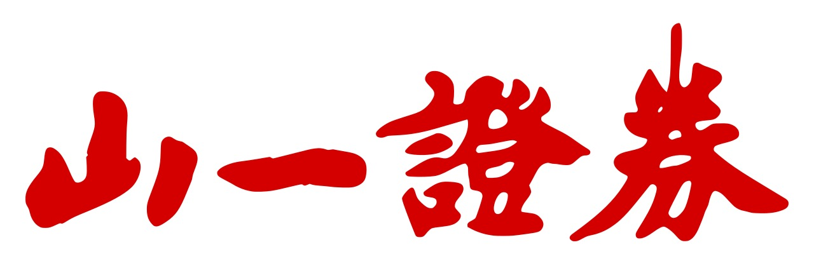
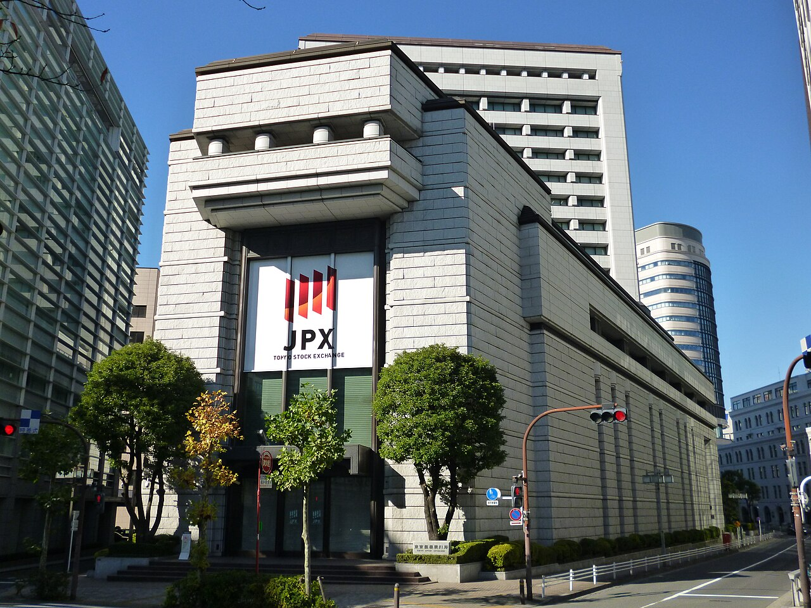
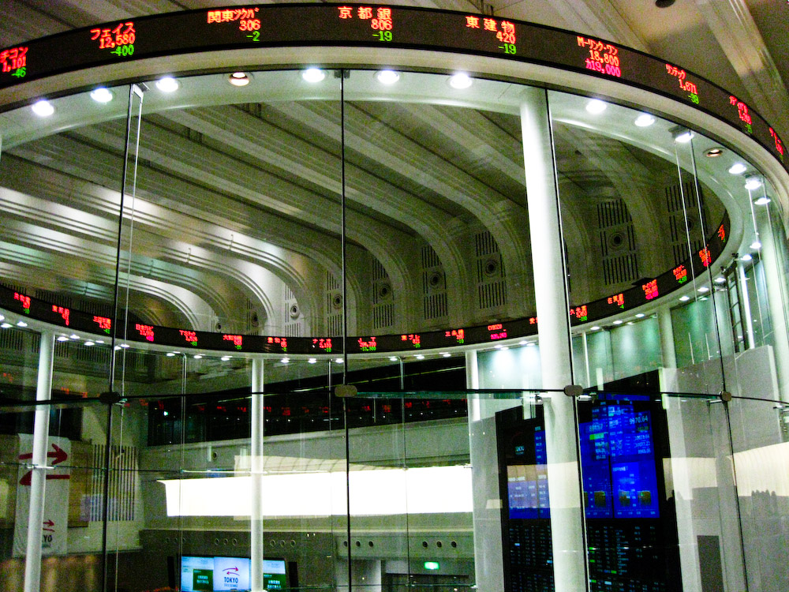
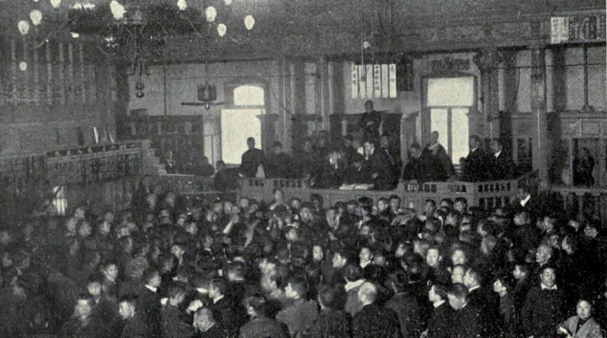
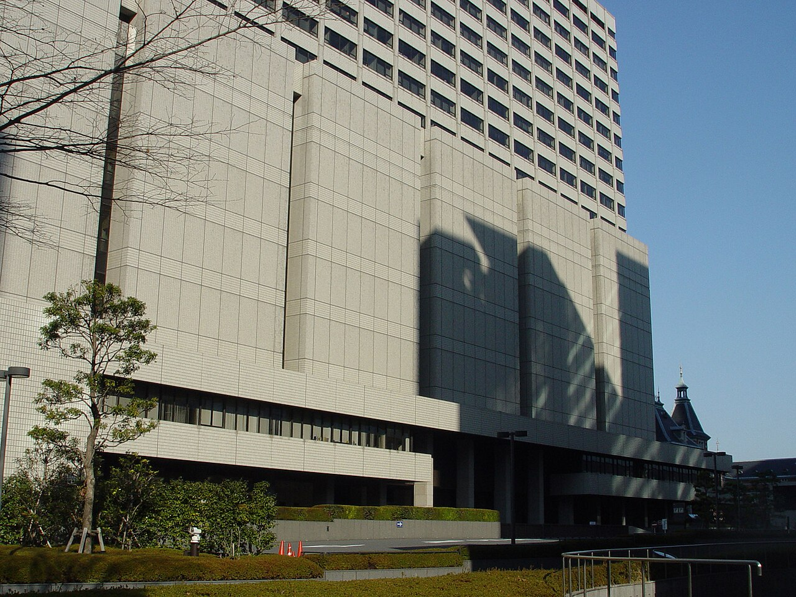
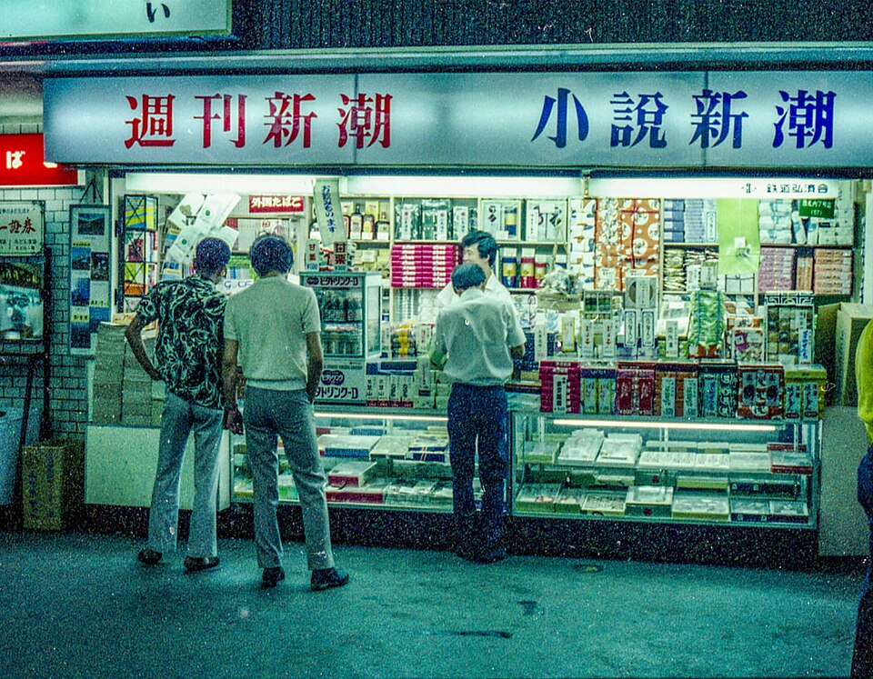
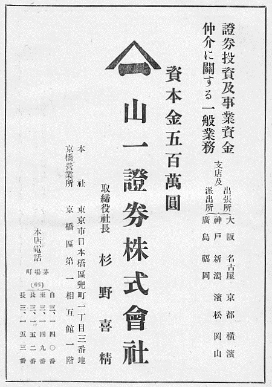

野
野澤正平
のざわ・しょうへい
1997年8月に山一社長
役割：簿外債務を引き継ぎ、自主廃業と顧客資産返還を指揮
その後：1997年11月24日の会見で社員への再就職支援を訴えた5
1987年頃〜1999年
山一證券は、バブル崩壊で生じた営業特金などの含み損を海外現法やペーパーカンパニーへ移す「飛ばし」で、簿外債務を長期間隠した。1
1997年の総会屋・小池隆一への利益供与事件を契機に行平次雄会長らが退任し、野澤正平社長の下で約2,600億円の簿外債務が表面化した。1
富士銀行・クレディ・スイスによる救済が実現せず、顧客保護と金融システム安定のため日銀特融を受けながら自主廃業し、1999年に破産した。2
山一證券の簿外債務は、1997年秋に突然生成されたものではない。1987年9月のタテホ・ショックによる債券価格下落と、同年10月のブラックマンデーによる株価暴落を起点に、営業特金の含み損が発生した。山一は法人営業を拡大し、企業から預かった資金を事業法人部で運用する営業特金を大量に獲得した。ピーク時の営業特金は2兆円を超え、1990年2月には運用額1兆8,000億円、含み損約1,300億円に達した。1
1989年12月に大蔵省が営業特金を1年以内に解消するよう通達し、1991年6月の証券取引法改正で事後的損失補填が禁止された。損失を本体で計上すれば自己資本と経営責任が表面化するため、山一は含み損を海外現地法人や新設ペーパー会社へ移し、株価の回復を待つ「飛ばし」に依存した。1991年11月24日時点の含み損は1,583億円であり、会計処理の問題を指摘された業務調整連絡委員会でも、延命隆副社長が「この方法しかないので、公認会計士にノーといわれればうちがつぶれることになる」と述べ。行平社長が決断したと社内報告書に記録されている。1
１９９２年９月からは山一本体で特定金銭信託を設定し、その特金で国債の貸し借りを繰り返し、ペーパーカンパニーの資金繰りをつけていた。その結果、有価証券報告書に記載された特金の残高は９２年３月期の７４４億円から９３年３月期の２，９０９億円に急増した。この頃から、山一の「飛ばし」疑惑は市場でうわさされ、マスコミで取り上げられるようになった。 なお、改正証券取引法の施行を間近に控えた１９９１年１１月２４日には、含み損は１，５８３億円であった。「飛ばし」による処理を決めた「業務調整連絡委員会」では会計処理として問題があるとの指摘があったが、委員長の延命隆副社長は「この方法しかないので、公認会計士にノーといわれればうちがつぶれることになる」と述べ、行平社長が決断した（「社内報告書」より）。
意味：会計上の問題を認識しながら、「会社がつぶれる」ことを理由に処理を進めた当時の判断を、社内報告書の引用として残している。[同PDF・68頁](https://www.fsa.go.jp/news/18/20070330-5/02.pdf)
簿外処理が続く一方で、山一は総会屋との関係を深めた。1994年12月から1995年1月まで、元社長ら7人は株主かつ顧客であった小池隆一に対し、32回にわたり約1億700万円の利益を付け替えたとして起訴された。昭和リースにも1994年11月から1995年3月まで76回、約3億1,600万円の損失補填を行ったとして起訴された。1997年7月30日の家宅捜索を経て、8月11日に行平次雄会長、三木淳夫社長。代表権を持つ副社長5人ら11人が退任した。23
野澤正平は1997年8月に社長へ就任し、五月女正治が会長となった。野澤は就任後に簿外債務の全容を知らされ、旧経営陣が生成した負債と、自分の在任中に公表する責任を同時に引き受けた。金融庁報告書が引用する資料では、野澤が8月16日に事実を知った後も96日間、五月女会長とともに隠蔽を続けたと評価されている。事実を知らされなかった期間と、知った後に公表しなかった期間が、後任経営陣の責任を分ける争点になった。1
野澤体制は、まず再建を試みた。1997年10月6日、山一は富士銀行に約2,600億円の簿外債務を正式に伝え、800億円の再建資金を要請した。しかし富士銀行は他行の同調を条件に250億円までと回答し、11月14日には追加支援ができないと伝えた。クレディ・スイスとの資本提携も成立せず、メリルリンチへの売却交渉も失敗した。誰が支援を決めるかという経営判断は、銀行自身の経営状況と、山一が過去に疑惑を否定してきたことによる不信に制約された。1
11月3日に三洋証券が会社更生法適用を申請し、11月17日に北海道拓殖銀行が破綻した。山一株は10月25日の252円から11月19日に一時59円まで下落し、11月21日にはムーディーズが山一社債を投資不適格に格下げした。11月22日、日本経済新聞が簿外債務を報道し、大蔵省証券局長が2,000億円超の簿外債務を公表した。野澤社長は11月24日早朝の臨時取締役会で自主廃業を提案し、同日、山一は営業休止届を提出した。4
山一証券は破綻時には債務超過ではなく、そこから何故、自主廃業せざるをえなかったのかという疑問が提起された。 しかし、破綻に至る過程を冷静に分析すれば、山一証券は破綻すべくして破綻したと結論せざるをえない。その最大の根拠は、同社の秘密主義、隠蔽体質、そして問題に正面から取り組まない先送りである。要するに、ガバナンスの構造が救いようのないほど腐敗していたことである。 創業から１９６５年（昭和４０年）まで業界トップの座に君臨していた同社の輝かしい歴史を考えると、この発端が問題になる。
意味：報告書が、財務上の債務超過だけでなく、経営構造そのものを破綻原因と断じている。[同PDF・67頁](https://www.fsa.go.jp/news/18/20070330-5/02.pdf)
11月24日の東京証券取引所で、野澤社長は自主廃業を公表した。会見では「私たちが悪いんです。善良で能力のある社員たちに申し訳なく思います。ひとりでも再就職できるよう、みなさんも支援してください。」と述べたと記録されている。ただし公式会見全文は未確認である。営業休止後、山一は1998年3月31日に全店舗を閉鎖し、全従業員を解雇した。清算業務に必要な社員は嘱託職員として再雇用された。56
自主廃業を決めた97年11月24日の午前11時半から、社長の野沢正平、会長の五月女正治、顧問弁護士の相沢光江とともに東京証券取引所で記者会見に臨んだ。 会見最後に野沢は突然、マイクを持って立ち上がり、「私たちが悪いんです。善良で能力のある社員たちに申し訳なく思います。ひとりでも再就職できるよう、みなさんも支援してください。」1)と涙ながらに絶叫した。海外のマスコミなどにはあまり受けの良くなかった「社長号泣」だが、３ヶ月前に急きょ社長に就任してから総会屋への利益供与事件の後始末、生き残りをかけた経営再建策の模索などに忙殺され、結局は山一証券百年の歴史に幕を自ら降ろす役目を負わされた野沢の無念さが伝わってくる。
意味：経営トップが、社員への謝罪と再就職支援を公の場で訴えた場面であり、自主廃業の人的被害を示す。[同資料](https://www2.kokugakuin.ac.jp/~ogiso/semi/2000/takayama.html)
自主廃業は、顧客財産と既約定取引を処理するための日銀特融を伴った。日本銀行は1997年11月24日以降、主力取引銀行と協力し、顧客財産の返還、内外の既約定取引の決済。海外業務からの撤退に必要な資金を供給した。特別検査では1997年11月末時点の簿外債務が2,914億円とされ、11月に会社が報告した2,648億円より266億円増加した。1999年6月1日に山一が破産を申し立て、翌2日に破産宣告を受けた際、最終的な債務超過見込額は1,602億円と公表された。786
証券取引等監視委員会は1997年11月25日に特別検査を開始し、約4か月の検査を経て、1998年3月20日に山一法人と元会長らを東京地検に告発した。4月2日に特別検査結果が公表され、4月16日に社内調査報告書が公表された。行平次雄と三木淳夫には2000年3月28日に東京地裁が懲役2年6月を言い渡し、行平には執行猶予、三木には一審実刑と報道されている。1998年12月の金融システム改革では投資者保護基金の制度整備や、証券行政の免許制から登録制への移行が進んだ。649
山一の処理をめぐる説明は、経営陣、監督当局。金融機関で異なった。三木淳夫は松野允彦証券局長に現先取引などを相談し、松野は相談を受けたことを認めながら、違法な「飛ばし」の具体的指示ではなく一般的な処理の考え方を聞かれたと主張している。富士銀行は、過去に山一の経営陣が「飛ばし」の疑惑を一貫して否定してきたため不信感を抱き、詳細資料を求めた。山一が告白した約2,600億円と再建資金800億円に対し、富士銀行が示した上限は250億円だった。救済交渉の数字は、簿外債務の発覚が資金繰りと信用判断を同時に変えたことを示している。さらに、日銀は山一そのものの継続を目的とせず、顧客財産の返還と既約定取引の決済を目的に資金を供給した。自主廃業の判断は、旧経営陣の刑事責任、後任経営陣の説明責任、金融機関の信用判断。顧客保護を同時に扱う決定だった。野澤社長の会見で示された社員への謝罪は、会社の財務問題が従業員の雇用と再就職に直結したことを示す。破産宣告までの処理では、経営を継続するための資金と、営業を終えるための資金が異なる用途で供給された。破綻後の検査は、数字の訂正だけでなく、誰が知り、誰が決め。誰が説明したかを確認する手続となった。監督と経営の境界も争点になった。責任の所在も争点になった。101
富士銀行への要請から回答までの約１ヶ月の間に、山一証券は外資系金融機関との提携も検討していた。しかし、メイン・バンクが本命という意識が強く、山一証券との資本提携に強い関心を示していたクレディ・スイスとの提携は実現しなかった。富士銀行による資本支援の拒否、クレディ・スイスとの資本提携の失敗により、三洋証券に続いて北海道拓殖銀行の破綻が報じられるにつれ、マーケットは次のターゲットを山一証券に向け始めた。時間がなくなった山一証券はメリルリンチと叩き売りのような売却交渉をするが、当然ながら失敗し、すべての切り札を使い尽くし、自主廃業の道を進むことになるのである。
意味：救済交渉が相次いで失敗し、市場の標的化と時間切れが自主廃業を決定づけたという記述である。[同PDF・67頁](https://www.fsa.go.jp/news/18/20070330-5/02.pdf)









| 旧山一證券本社（現・兜町周辺） | 東京都中央区日本橋兜町5-1 | 臨時取締役会、捜索、営業休止の中心 | 13 |
| 東京証券取引所 | 東京都中央区日本橋兜町2-1 | 野澤社長の自主廃業会見 | 14 |
| 東京地方裁判所 | 東京都千代田区霞が関1-1-4 | 山一の破産宣告・刑事裁判 | 15 |
| 東京高等裁判所 | 東京都千代田区霞が関1-1-1 | 控訴審関連の裁判所 | 15 |
| 金融庁・旧大蔵省庁舎周辺 | 東京都千代田区霞が関3-2-1 | 監督・検査・証券局の所在地 | 16 |
| 日本銀行本店 | 東京都中央区日本橋本石町2-1-1 | 日銀特融の政策主体 | 7 |
| 富士銀行本店跡地周辺 | 東京都千代田区大手町1丁目 | 山一の再建資金要請先 | 1 |
山一は営業特金で発生した含み損を海外現法やペーパーカンパニーへ移し、1996年12月には山一ファイナンスの不良債権処理に1,500億円を投入した。総会屋への利益付け替えと、富士銀行への再建資金要請は別の経路だが、経営危機の中で同時に進行した。12
のざわ・しょうへい
1997年8月に山一社長
役割：簿外債務を引き継ぎ、自主廃業と顧客資産返還を指揮
その後：1997年11月24日の会見で社員への再就職支援を訴えた5
ゆきひら・つぎお
元会長
役割：三木社長らとともに旧経営陣の中心
その後：粉飾決算・虚偽記載事件で有罪判決4
みき・あつお
元社長
役割：営業特金・簿外債務処理を担った経営トップ
その後：粉飾決算事件で有罪判決10
さおとめ・まさじ
1997年8月以降の会長
役割：野澤社長とともに自主廃業期の経営を担当
その後：野澤とともに簿外債務を知った後の対応が争点となった3
にいもと・たかまさ
元常務・社内調査委員会委員長
役割：簿外債務の社内調査を統括
その後：社内調査報告書を取りまとめた側3
こいけ・りゅういち
総会屋
役割：山一株主・顧客として利益供与と損失補填を受けたとして起訴
その後：確定量刑の判決文は未確認2
まつの・のぶひこ
元大蔵省証券局長
役割：三木から飛ばし処理について相談を受けた
その後：違法な指示は否定10
やまもと・ゆきお
当時の富士銀行頭取と報道
役割：山一の再建支援要請を検討した側
その後：富士銀行は最終的に全面支援を拒否1
はらだ・あきお
当時の政府委員・刑事局長
役割：国会で山一事件の起訴事実を説明
その後：国会答弁に起訴事実が残る2
はしもと・あつし
参議院法務委員会委員
役割：山一事件の利益供与額・起訴人数を政府に質問
その後：国会会議録に質問が残る17
1997年の証券局長
役割：山一の2,000億円超の簿外債務を公表
その後：氏名は判決資料上未確認4
えんめい・たかし
元副社長・業務調整連絡委員会委員長
役割：会計処理の問題を指摘される中で処理方法を述べた
その後：社内報告書の引用に登場1
あいざわ・みつえ
顧問弁護士
役割：自主廃業会見に同席
その後：公式会見全文は未確認5
相関図は、営業特金と簿外処理を決めた旧経営陣、情報を引き継いだ自主廃業期の経営陣、総会屋への利益供与、監督・捜査機関。救済交渉先を分けて示す。闇社会・総会屋との接点は underworld として示す。
上司と部下・盟友。行平が会長、三木が社長を務めた「行平―三木ライン」が簿外債務処理と経営判断の中心だったと報告されている。1997年8月11日、総会屋事件の責任を取り、ともに退任した18
相談者と監督官庁。三木は1991年末頃、含み損を抱えた証券の現先取引等について松野に相談した。松野は相談を受けたことを認めたが、違法な指示は否定した10
旧経営陣と後任社長。行平退任後、野澤が社長を引き継いだが、社長就任後に巨額簿外債務を知らされたと報道されている。野澤は旧経営陣の負の遺産を処理する立場となった19
前任者と後任者。野澤は三木退任後の社長として、再建または自主廃業を決める責任を負った3
経営上の盟友。両者は1997年8月の新体制で社長・会長となり、自主廃業期の経営を担当した5
経営者と従業員。野澤は会見で「善良で能力のある社員たち」への謝罪と再就職支援を訴えた。発言全文は未確認だが、会見の趣旨は複数資料で一致する5
資金の出し手と受け手。行平個人が小池に直接支払ったことは本資料で確認できないが、行平時代の山一経営陣が小池への利益供与を実行したとして起訴された2
資金の出し手と受け手。小池への32回、約1億700万円の利益付け替えは、元社長ら7人の共謀による起訴事実とされた2
資金の出し手と受け手。昭和リースには約3億1,600万円の損失補填が行われたとして、山一と元経営陣が起訴された2
支援要請者とメインバンク。野澤体制は1997年10月6日に800億円の再建資金を要請したが、富士銀行は250億円までしか応じられず、11月14日に追加支援不能と回答した1
提携交渉。山一はクレディ・スイスとの資本提携を模索したが、成立しなかった1
売却交渉。山一は時間切れの中でメリルリンチへの売却交渉を行ったが、失敗した1
監督と被監督。大蔵省は営業特金解消や損失補填禁止を通達した一方、山一の簿外債務を早期に処理できなかったとの批判が国会で示された1
捜査・告発。監視委員会は特別検査を行い、1998年3月に虚偽記載等の容疑で東京地検に告発した6
捜査と被捜査。1997年7月30日に家宅捜索し、総会屋への利益供与・損失補填を捜査した3
１９８０年代後半のバブル期に、山一証券はリテール営業での劣勢を法人営業で取り戻すべく、営業特金の獲得に邁進した。営業特金は運用が証券会社の事業法人部に任されているので、売買を繰り返すことによって多額の手数料を手にすることができた。山一証券では、ピーク時には営業特金が２兆円を超えたといわれている。この獲得のために使われたのが事前の利回り保証を意味する「にぎり」である。これは言うまでもなく証券取引法違反であるが、株価が上昇し続ける限り、表面化して問題になることはない。 しかし、１９８９年１２月に、１年以内に営業特金の廃止の解消を命じた大蔵省の通達が出されると、証券会社は営業特金の解約が喫緊の課題となる。後の「社内調査報告書—いわゆる簿外債務を中心として—」によると、１９９０年２月の時点での事業法人部の運用金額は１兆８千億円、含み損は約１，３００億円であった。
意味：営業特金の規模と、利回り保証が損失補填・簿外処理へつながる背景を示す。[同PDF・67頁](https://www.fsa.go.jp/news/18/20070330-5/02.pdf)
公的資料で認定・起訴内容が確認できる中心は、総会屋・小池隆一への利益供与と。昭和リースへの損失補填である。小池の弟が経営する会社名義口座の詳細、暴力団との直接的資金移転、政治家への献金・口利きは。調査メモの確認範囲では未確認である。
総会屋・小池隆一、山一元経営陣 認定
山一元社長・元副社長・元専務ら7人 認定
山一・昭和リース 認定
小池隆一側、山一 報道
三木淳夫、松野允彦 指摘
山一、海外現法、ペーパー会社 認定
暴力団名・個人名 確認できない
政治家名・金額 確認できない
さらに、簿外債務の実態もごく一部の経営上層部にしか知られず、密室処理を図った。これらは露見によって経営者としての責任が問われ引責辞任の可能性があったためである。このため、その解消の機会が何度かありながら、先送りを続け傷口を広げていったのである。この隠蔽体質こそ山一証券の破綻の核心であろう。 （２）営業特金の獲得競争
意味：破綻原因を、単発の不正ではなく、責任追及を避けるための組織的な秘匿と先送りとして位置づけている。[同PDF・67頁](https://www.fsa.go.jp/news/18/20070330-5/02.pdf)
| 東京地裁 | 2000-03-28 | 懲役2年6月・執行猶予付き |
虚偽記載・粉飾決算・証券取引法違反等。一審判決。控訴審・上告審の詳細は未確認4
| 東京地裁 | 2000-03-28 | 懲役2年6月・一審実刑と報道 |
虚偽記載・粉飾決算・証券取引法違反等。一審判決。控訴審・上告審の詳細は未確認419
| 刑事裁判 | 未確認 | 罰金刑を受けたと報道 |
総会屋への利益供与事件。量刑の判決全文は未確認21
| 刑事裁判 | 未確認 | 起訴 |
証券取引法違反・商法上の利益受供与。山一事件に関する確定量刑の判決文は未確認2
| 東京地方裁判所 | 1998-11 | 山一が訴訟を提起。請求額・確定判決の全容は未確認 |
損害賠償請求。全容は未確認6
| 裁判所判決 | 未確認 | 1995年3月期2,331億400万円、1996年3月期2,379億8,600万円、1997年3月期2,718億4,000万円の犯罪事実を認定 |
有価証券報告書の未処理損失の圧縮記載。判決文に記載4
| 大蔵省 | 1997-11-24 | 必要な命令を発出 |
業務方法・財産管理。処分6
| 証券取引等監視委員会 | 1998-04-02 | 行政処分を勧告 |
行政上の監督・検査。勧告6
さらに、簿外債務の実態もごく一部の経営上層部にしか知られず、密室処理を図った。これらは露見によって経営者としての責任が問われ引責辞任の可能性があったためである。このため、その解消の機会が何度かありながら、先送りを続け傷口を広げていったのである。この隠蔽体質こそ山一証券の破綻の核心であろう。 （２）営業特金の獲得競争
意味：破綻原因を、単発の不正ではなく、責任追及を避けるための組織的な秘匿と先送りとして位置づけている。[同PDF・67頁](https://www.fsa.go.jp/news/18/20070330-5/02.pdf)
１９８０年代後半のバブル期に、山一証券はリテール営業での劣勢を法人営業で取り戻すべく、営業特金の獲得に邁進した。営業特金は運用が証券会社の事業法人部に任されているので、売買を繰り返すことによって多額の手数料を手にすることができた。山一証券では、ピーク時には営業特金が２兆円を超えたといわれている。この獲得のために使われたのが事前の利回り保証を意味する「にぎり」である。これは言うまでもなく証券取引法違反であるが、株価が上昇し続ける限り、表面化して問題になることはない。 しかし、１９８９年１２月に、１年以内に営業特金の廃止の解消を命じた大蔵省の通達が出されると、証券会社は営業特金の解約が喫緊の課題となる。後の「社内調査報告書—いわゆる簿外債務を中心として—」によると、１９９０年２月の時点での事業法人部の運用金額は１兆８千億円、含み損は約１，３００億円であった。
意味：営業特金の規模と、利回り保証が損失補填・簿外処理へつながる背景を示す。[同PDF・67頁](https://www.fsa.go.jp/news/18/20070330-5/02.pdf)
破綻後にまとめられた山一証券の「社内調査報告書」は、簿外債務の処理の経緯を克明に記している。これによると、１９８７年９月のタテホ・ショックによる債券価格の下落によって営業特金に多額の損失が発生し、この損失の一部を山一証券が引き取り、海外の現法の口座や新たに設立したペーパー会社に飛ばしたのが最初であるといわれる。翌１０月にニューヨーク市場でブラック・マンデーが起き、今度は株価暴落によって大きな損失が発生した。この両者によって生じた損失の内、山一証券が責任を負わされた損失額は１千億円前後にまで膨らんだといわれる。 事態の深刻さにようやく気付くと「業務調整連絡委員会」という社内組織を設置し、処理に当たった。しかし、他の大手証券と較べて極めて不徹底であり、先送りによって際限のない簿外債務の累積という悪循環にはまり込むことになるのである。 １９９１年６月に証券取引法が改正されると、事後の損失補填が禁止され、含み損のある証券を証券会社が引き取ることは明らかに「補填行為」にあたることになる。この結果、山一証券は含み損を抱えた営業特金の処理を際限のない「飛ばし」によってしのぎ、ひたすら株価の回復を待つほかなくなった。
意味：最初の損失移転から、法改正後の「飛ばし」の常態化までを連続的に説明している。[同PDF・67頁](https://www.fsa.go.jp/news/18/20070330-5/02.pdf)
自力再建が難しくなった山一証券は、１０月６日にメイン・バンクである富士銀行に支援を要請した。この中で、山一証券は初めて約２，６００億円に及ぶ簿外債務の存在を告白し、財務改善策を提示した上で８００億円の再建資金が必要であることを訴えた。それまで、「飛ばし」の疑惑が報道される度に、富士銀行は真相を問い質してきたが、山一の経営陣は一貫して否定してきた。このため、富士銀行は山一証券に対して不信感を抱いており、検討のためにより詳細な資料を求め即答を避けた。 約１ヶ月後の１１月１１日に、山一側の労後ローン８００億円の要請に対して、富士銀行は、他行が同調するのが前提で、富士はそのうち２５０億円しか応じられない、また過去に無担保で融資してきた分についても早急に担保を差し入れて欲しい、と回答した。１４日に山一証券側は再度の要請のため富士銀行を訪問するが、富士銀行自体が厳しい状況にあるためこれ以上の支援はできないことを告げられた。
意味：メインバンクが、過去の否定を踏まえて山一経営陣を信用できなくなった経緯を示す。[同PDF・67頁](https://www.fsa.go.jp/news/18/20070330-5/02.pdf)
富士銀行への要請から回答までの約１ヶ月の間に、山一証券は外資系金融機関との提携も検討していた。しかし、メイン・バンクが本命という意識が強く、山一証券との資本提携に強い関心を示していたクレディ・スイスとの提携は実現しなかった。富士銀行による資本支援の拒否、クレディ・スイスとの資本提携の失敗により、三洋証券に続いて北海道拓殖銀行の破綻が報じられるにつれ、マーケットは次のターゲットを山一証券に向け始めた。時間がなくなった山一証券はメリルリンチと叩き売りのような売却交渉をするが、当然ながら失敗し、すべての切り札を使い尽くし、自主廃業の道を進むことになるのである。
意味：救済交渉が相次いで失敗し、市場の標的化と時間切れが自主廃業を決定づけたという記述である。[同PDF・67頁](https://www.fsa.go.jp/news/18/20070330-5/02.pdf)
山一証券は破綻時には債務超過ではなく、そこから何故、自主廃業せざるをえなかったのかという疑問が提起された。 しかし、破綻に至る過程を冷静に分析すれば、山一証券は破綻すべくして破綻したと結論せざるをえない。その最大の根拠は、同社の秘密主義、隠蔽体質、そして問題に正面から取り組まない先送りである。要するに、ガバナンスの構造が救いようのないほど腐敗していたことである。 創業から１９６５年（昭和４０年）まで業界トップの座に君臨していた同社の輝かしい歴史を考えると、この発端が問題になる。
意味：報告書が、財務上の債務超過だけでなく、経営構造そのものを破綻原因と断じている。[同PDF・67頁](https://www.fsa.go.jp/news/18/20070330-5/02.pdf)
１９９２年９月からは山一本体で特定金銭信託を設定し、その特金で国債の貸し借りを繰り返し、ペーパーカンパニーの資金繰りをつけていた。その結果、有価証券報告書に記載された特金の残高は９２年３月期の７４４億円から９３年３月期の２，９０９億円に急増した。この頃から、山一の「飛ばし」疑惑は市場でうわさされ、マスコミで取り上げられるようになった。 なお、改正証券取引法の施行を間近に控えた１９９１年１１月２４日には、含み損は１，５８３億円であった。「飛ばし」による処理を決めた「業務調整連絡委員会」では会計処理として問題があるとの指摘があったが、委員長の延命隆副社長は「この方法しかないので、公認会計士にノーといわれればうちがつぶれることになる」と述べ、行平社長が決断した（「社内報告書」より）。
意味：会計上の問題を認識しながら、「会社がつぶれる」ことを理由に処理を進めた当時の判断を、社内報告書の引用として残している。[同PDF・68頁](https://www.fsa.go.jp/news/18/20070330-5/02.pdf)
最後になって、営業畑出身の野沢正平専務が社長になるが、これとて、行政会長派にとって御しやすい人物であったことが理由の一つであるとみられている。驚くことに、８月１１日に山一証券最後の社長に就任した野澤正平氏は就任時に簿外債務の存在は知らされていなかった。というよりも、その存在を知っていれば就任を断られる可能性が強いから、簿外債務の事実を知らないことが次期社長の最大の条件であった。初めてその報告を受けるのは８月１６日のことであった。 たしかに、簿外債務を発生させ、５年間も粉飾決算を続けてきたのは、行政、三木両社長の責任である。しかし、五月女会長と野澤社長は８月１６日に事実を知ってから９６日間、隠蔽を続けてきた。就任後に役員ＯＢが行政と三木を訴えるように進言したにもかかわらず、彼らは行動を起こさなかった。この時点で彼らは共犯者になることを選択した、と評価されても弁明の余地はない（読売新聞社会部［２００１］、２４５ページ）。
意味：後任社長が情報を知らされなかったこと、知った後も公表しなかったことの双方を厳しく問題視している。[同PDF・68頁](https://www.fsa.go.jp/news/18/20070330-5/02.pdf)
（ｅ） 上記の点からすると，ＮＦら５社の法人格は濫用されていたか，形骸化していたというべきであるから，ＮＦら５社の法人格は否認され，その背後にいる山一證券がその含み損を負担しなければならない。 また，山一證券は，その海外部門の業務に関して，同じく含み損のある有価証券を海外のペーパー会社に引き取らせるなどし，最終的に山一證券の海外現地法人である山一オーストラリアに集約させていった。この場合も法人格が濫用されるなどし，法人格は否認されるべきであるので，背後にいる山一證券がその含み損を負担する。 （ｆ） なお，被告に対する証取法２４条の４，２２条，２１条１項３号に基づく損害賠償請求事件の別件判決（乙Ａ２７５）においても，ＮＦら５社及び海外ペーパー会社であるヒルトップ社等の法人格は否認され，これらの国内，海外の会社の資産及び負債はすべて山一證券に帰属するものとして貸借対照表に計上すべきであったと判断されている。
意味：裁判所が、国内外のペーパー会社を独立企業として扱わず、含み損・資産・負債を山一本体に帰属させるべきだと認定している。[同PDF・12〜13頁](https://www.courts.go.jp/assets/hanrei/hanrei-pdf-32864.pdf)
しかし，そもそも本件簿外債務は，山一證券が損失補填の事実を隠ぺいし続けてきたことから生じたものである。臨時報告書や半期報告書は、それまでの隠ぺい工作をやめて事実を公表した結果作成されたものに過ぎず、従来の異常な状態が、本来あるべき適正な姿に戻ったに過ぎない。したがって、本件簿外債務は、山一證券の取締役会の決議によって初めて山一證券に帰属することとなったのではない。 （イ）被告は、損失補填取引は公序良俗に反して無効であるのだから、山一證券に本件簿外債務が帰属することはないと主張する。 しかし、無効の可能性がある取引であるとしても、当事者がその無効の主張をせず、補填相当額の返還も受けていない段階において、この取引の事実を会計処理上無視するのは誤っているといわざるを得ない。損失補填としての財貨の移動があった以上、移動の結果は財務諸表に反映させるべきである。
意味：簿外債務は自主廃業時に突然発生したのではなく、隠蔽されていた実質的負債だと裁判所が整理している。[同PDF・19頁](https://www.courts.go.jp/assets/hanrei/hanrei-pdf-32864.pdf)
山一証券は，多額の含み損及び簿外債務と疑われるもの等の存在が明らかになり，これにより，自己資本規制比率が大幅に悪化し，また，自社株価の急落により資金繰りにも支障を来しかねない状況になったとして，平成9年11月24日の取締役会において自主廃業に向けて営業を休止する旨決議，同日大蔵大臣に営業休止届出書を提出した。 委員会は，山一証券が営業休止に至る過程において証取法違反行為があったのではないかとの心証を強め，平成9年11月25日に山一証券に対する特別検査に着手，以降約4か月間にわたり検査を実施した。 一方，有価証券報告書の虚偽記載について，強制調査を含む犯則事件の調査を進めた結果，法令違反行為が認められたことから，平成10年3月20日，犯則嫌疑法人山一証券及び同社元代表取締役会長A，同社元代表取締役社長Bほか1名について，東京地方検察庁検察官に告発した。 山一証券は，平成５年２月の当委員会の検査に際して，「『とばし』（注）取引その他の簿外債務はない」旨回答していたが，今回の検査の過程で，事実とは異なる虚偽の報告を行っていたことを認めた。 （注）「とばし」については，一義的に定義することは困難な面があるが，一般的には，企業の保有する有価証券等の評価損を表面化させないため，その有価証券等を他の企業に簿価等で売却する直取引で，その仲介を証券会社が行うものといわれている。
意味：監視委員会資料は、山一が過去の検査で「とばし」はないと回答したことを、後の検査で虚偽報告と認めたと記録している。[同PDF・27頁](https://www.fsa.go.jp/sesc/reports/n_09/02.pdf)
○西田（猛）委員 それでは、この日経新聞の記事の聞き方も問題があったのでしょうけれども、ただ、この記事の聞き方は、飛ばしの処理の件で、こうあるわけですね。 じゃ、時期の件は別にいたしまして、その当時いわゆる飛ばしと呼ばれていたかどうかは別にして、その取引先企業の証券を用いた現先取引の件で山一証券の方が相談に来たことがある、そしてそれについて話をしたことがあるということは確実なわけですね。 ○松野参考人 九一年の十一月か十二月ごろに来たというふうに記憶しております。 ○西田（猛）委員 それと、先ほど松野参考人は、特別な約束をしない限り現先取引そのものは違法な行為ではない、企業と企業との行為であって、証券会社が絡むものではなく、証券取引法に直ちに触れるものと決めつけることはできない、仲介をしてもそれは違法ではないというふうな御答弁をしておられます。 しかし、なぜ山一証券の方がそんなにも巨額な証券現先の処理の件について相談に来なければいけないのかという件について、相談に来られた山一証券の方にお尋ねになりませんでしたか。 ○松野参考人 当時の記憶はございませんが、ただ、その当時の状況から考えてみますと、証券不祥事で相当証券界に対する信用も失墜しましたし、あるいは証券行政に対する批判もありまして、証券不祥事が、たしか九一年の六月ですか、に表面化したわけでございますけれども、（中略）私は、そのトラブルの相談というよりは、飛ばしについての処理の一般の考え方を聞きに来たというふうに受けとめて対応をしたというふうに記憶をしております。
意味：三木側の相談と、松野氏の「違法行為の具体的指示ではなく一般論だった」という認識のずれが、国会答弁として残る。[同会議録](https://kokkai.ndl.go.jp/simple/detail?minId=114204629X00719980204&spkNum=37)
自主廃業を決めた97年11月24日の午前11時半から、社長の野沢正平、会長の五月女正治、顧問弁護士の相沢光江とともに東京証券取引所で記者会見に臨んだ。 会見最後に野沢は突然、マイクを持って立ち上がり、「私たちが悪いんです。善良で能力のある社員たちに申し訳なく思います。ひとりでも再就職できるよう、みなさんも支援してください。」1)と涙ながらに絶叫した。海外のマスコミなどにはあまり受けの良くなかった「社長号泣」だが、３ヶ月前に急きょ社長に就任してから総会屋への利益供与事件の後始末、生き残りをかけた経営再建策の模索などに忙殺され、結局は山一証券百年の歴史に幕を自ら降ろす役目を負わされた野沢の無念さが伝わってくる。
意味：経営トップが、社員への謝罪と再就職支援を公の場で訴えた場面であり、自主廃業の人的被害を示す。[同資料](https://www2.kokugakuin.ac.jp/~ogiso/semi/2000/takayama.html)
２．日本銀行は、平成9年11月24日に山一證券が廃業および解散の方針を決定して以降、日本銀行法第３８条（旧法第２５条）に基づき、主力取引銀行とも協力しつつ、同社の顧客財産の返還、内外の既約定取引の決済、海外業務からの撤退等に必要な資金を供給してきた。 ３．山一證券の廃業・解散方針の決定当時、株価やアジア通貨の不安定な動き、相次ぐ金融機関の経営破綻を背景に、わが国金融システムを巡る環境が急激に厳しくなっており、また、景気も減速局面が続き、企業の景況感も慎重なものとなっていた。こうした中で、内外市場において広範な業務展開を行い、多数の顧客を擁していた山一證券の経営行詰まりにより、同社の内外市場での取引が約定どおりに履行されないこととなれば、内外市場の著しい混乱を招き、金融システム全体の安定が損なわれることが強く懸念された。 ４．このような点を踏まえ、日本銀行は、山一證券の廃業への過程において、約定済み取引等の円滑な履行を確保することが、わが国金融・証券業界に対する信認の低下や内外市場の混乱を回避し、金融システム全体の安定を確保するために、極めて重要であると考え、臨時異例の措置として、必要資金の供給に踏み切ったものである。山一證券からは、これまでに、通常の取引等にかかる決済は基本的に終了していると聞いており、日本銀行としては、山一證券への資金供給の目的は、既に十分に達成されたものと認識している。
意味：自主廃業が顧客資産返還だけでなく、国内外の決済と金融システム安定のための日銀特融を伴う処理だったことを示す。[同談話](https://www.boj.or.jp/about/press/danwa/dan9906a.htm)
金融システム改革法により投資者保護基金を設立し、日銀特融債権の譲受けを可能にした。9
三洋・山一の破綻により、寄託証券補償基金の限界と投資者保護制度の必要性が明確になった。1
金融システム改革により証券行政は免許制から登録制へ移行した。1
橋本ビッグバン以後、証券行政の基本姿勢が転換した。1
実質を伴わない自己資本の増加を防ぐため、ダブル・ギアリング等への規定が整備された。22
簿外債務を取締役会・監査人・監督当局が把握できなかった事例として、リスク管理と社外監視が検討された。1
松野允彦：三木から相談を受け、飛ばしについて処理の一般の考え方を聞きに来たと受け止めたが、違法な指示はしていないと主張している。10
国会で示された批判：山一の相談を受けながら十分な監督・公表をしなかったのではないかと指摘している。10
山一旧経営陣側：含み損を抱えた有価証券が山一本体に帰属するか、現先取引が通常の金融取引だったかを争点としている。4
裁判所：国内外のペーパー会社の法人格を否認し、背後にいる山一證券が含み損を負担すべきと認定している。4
野澤正平：社員への謝罪と再就職支援を訴え、顧客財産返還と既約定取引の決済を進めるため自主廃業を決めた。5
金融庁報告書：秘密主義、隠蔽体質、問題に正面から取り組まない先送りが。破綻の核心だったと評価している。1